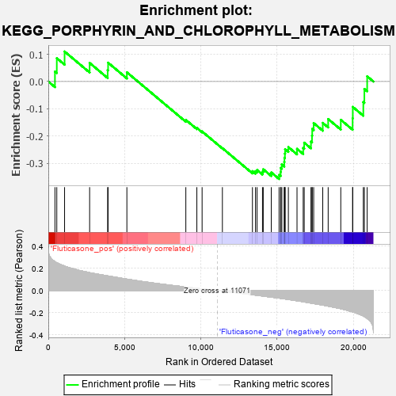
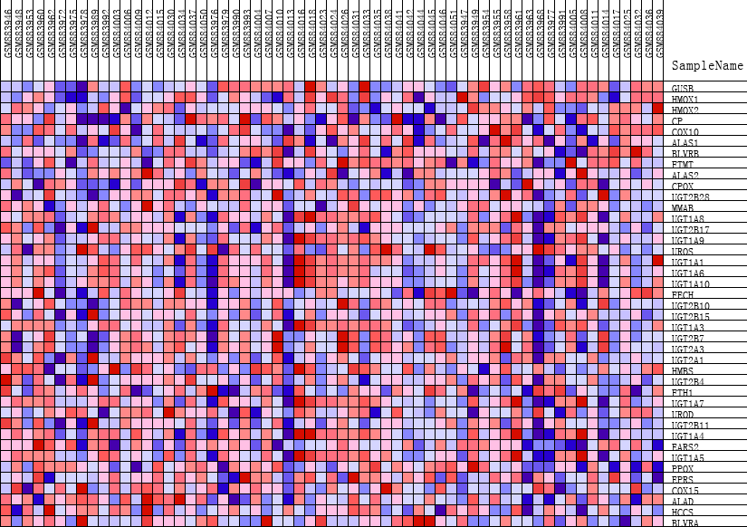
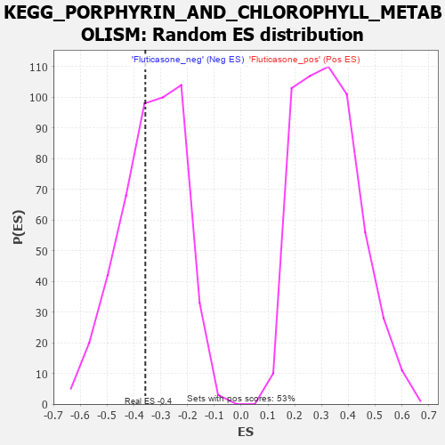

| | | Dataset | GSEA_expr_Flu.GSEA_timepoint.cls#Fluticasone |
| Phenotype | GSEA_timepoint.cls#Fluticasone |
| Upregulated in class | Fluticasone_neg |
| GeneSet | KEGG_PORPHYRIN_AND_CHLOROPHYLL_METABOLISM |
| Enrichment Score (ES) | -0.35774654 |
| Normalized Enrichment Score (NES) | -1.0691363 |
| Nominal p-value | 0.41860464 |
| FDR q-value | 1.0 |
| FWER p-Value | 0.98 |
Table: GSEA Results Summary

Fig 1: Enrichment plot: KEGG_PORPHYRIN_AND_CHLOROPHYLL_METABOLISM
Profile of the Running ES Score & Positions of GeneSet Members on the Rank Ordered List
| PROBE | DESCRIPTION
(from dataset) | GENE SYMBOL | GENE_TITLE | RANK IN GENE LIST | RANK METRIC SCORE | RUNNING ES | CORE ENRICHMENT | | 1 | GUSB | NA | | | 435 | 0.260 | 0.0366 | No |
| 2 | HMOX1 | NA | | | 556 | 0.250 | 0.0858 | No |
| 3 | HMOX2 | NA | | | 1066 | 0.220 | 0.1102 | No |
| 4 | CP | NA | | | 2708 | 0.161 | 0.0683 | No |
| 5 | COX10 | NA | | | 3890 | 0.132 | 0.0417 | No |
| 6 | ALAS1 | NA | | | 3918 | 0.131 | 0.0691 | No |
| 7 | BLVRB | NA | | | 5149 | 0.103 | 0.0338 | No |
| 8 | FTMT | NA | | | 9013 | 0.032 | -0.1409 | No |
| 9 | ALAS2 | NA | | | 9735 | 0.020 | -0.1704 | No |
| 10 | CPOX | NA | | | 10079 | 0.015 | -0.1833 | No |
| 11 | UGT2B28 | NA | | | 11409 | -0.005 | -0.2447 | No |
| 12 | MMAB | NA | | | 13378 | -0.037 | -0.3290 | No |
| 13 | UGT1A8 | NA | | | 13577 | -0.041 | -0.3293 | No |
| 14 | UGT2B17 | NA | | | 13681 | -0.043 | -0.3248 | No |
| 15 | UGT1A9 | NA | | | 14036 | -0.049 | -0.3307 | No |
| 16 | UROS | NA | | | 14085 | -0.050 | -0.3221 | No |
| 17 | UGT1A1 | NA | | | 14614 | -0.060 | -0.3339 | No |
| 18 | UGT1A6 | NA | | | 15123 | -0.068 | -0.3428 | Yes |
| 19 | UGT1A10 | NA | | | 15226 | -0.070 | -0.3322 | Yes |
| 20 | FECH | NA | | | 15235 | -0.070 | -0.3172 | Yes |
| 21 | UGT2B10 | NA | | | 15306 | -0.072 | -0.3048 | Yes |
| 22 | UGT2B15 | NA | | | 15464 | -0.075 | -0.2957 | Yes |
| 23 | UGT1A3 | NA | | | 15476 | -0.075 | -0.2798 | Yes |
| 24 | UGT2B7 | NA | | | 15506 | -0.076 | -0.2645 | Yes |
| 25 | UGT2A3 | NA | | | 15519 | -0.076 | -0.2484 | Yes |
| 26 | UGT2A1 | NA | | | 15733 | -0.080 | -0.2408 | Yes |
| 27 | HMBS | NA | | | 16299 | -0.092 | -0.2472 | Yes |
| 28 | UGT2B4 | NA | | | 16705 | -0.101 | -0.2441 | Yes |
| 29 | FTH1 | NA | | | 16770 | -0.103 | -0.2246 | Yes |
| 30 | UGT1A7 | NA | | | 17214 | -0.113 | -0.2206 | Yes |
| 31 | UROD | NA | | | 17282 | -0.115 | -0.1985 | Yes |
| 32 | UGT2B11 | NA | | | 17296 | -0.115 | -0.1739 | Yes |
| 33 | UGT1A4 | NA | | | 17391 | -0.117 | -0.1526 | Yes |
| 34 | EARS2 | NA | | | 17986 | -0.131 | -0.1518 | Yes |
| 35 | UGT1A5 | NA | | | 18341 | -0.141 | -0.1377 | Yes |
| 36 | PPOX | NA | | | 19168 | -0.164 | -0.1407 | Yes |
| 37 | EPRS | NA | | | 19943 | -0.192 | -0.1349 | Yes |
| 38 | COX15 | NA | | | 19954 | -0.193 | -0.0932 | Yes |
| 39 | ALAD | NA | | | 20645 | -0.229 | -0.0755 | Yes |
| 40 | HCCS | NA | | | 20713 | -0.234 | -0.0273 | Yes |
| 41 | BLVRA | NA | | | 20897 | -0.252 | 0.0192 | Yes |
Table: GSEA details [plain text format]

Fig 2: KEGG_PORPHYRIN_AND_CHLOROPHYLL_METABOLISM
Blue-Pink O' Gram in the Space of the Analyzed GeneSet

Fig 3: KEGG_PORPHYRIN_AND_CHLOROPHYLL_METABOLISM: Random ES distribution
Gene set null distribution of ES for KEGG_PORPHYRIN_AND_CHLOROPHYLL_METABOLISM